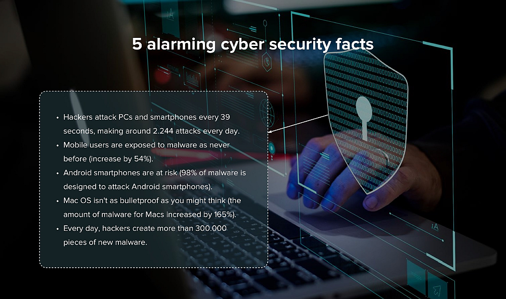
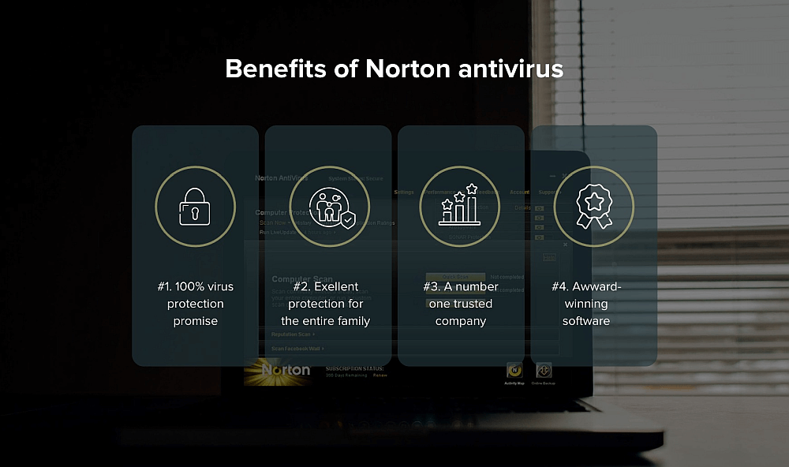
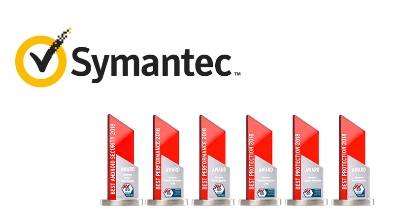

Your Personal Data Is Not As Private As It Once Was. Here’s What You Need To Know.
For an average PC or a smartphone user, hacker attacks and data breaches seem so far away. You may say: "Who on earth would want to hack my computer?"
But the reality is darker and more dreary than you think. While you're reading these lines, hackers attack PCs and smartphones every 39 seconds, making around 2.244 attacks every day.
The worst part is that we're all exposed to attacks. It doesn't matter what devices or browsers we use. With the birth of the internet and the adoption of PCs and smartphones, we're all equally in danger.
Think about it:
- Mobile users are exposed to malware as never before. With adoption and increased use of smartphones, mobile devices are in danger of getting attacked. In 2018, the number of malware modifications increased by 54%.
- Android smartphones are at risk. 98% of malware is designed to attack Android smartphones.
- Mac OS isn't as bulletproof as you might think. In 2018, the amount of malware for Macs increased by 165%.
- A shocking amount of malware is created every day. While you carefreely browse the internet, shop on e-commerce websites, and open unidentified emails, someone always wants to compromise your data security. Every day, hackers create more than 300.000 pieces of new malware.

Do you still think that you don't need antivirus software on your phone and computer after figuring out these overwhelming facts?
Do you know where to head for the most reliable, proven, and safe antivirus software that'll guard your device day and night?
Luckily for you, we do.
So, the hero of the day is Norton Antivirus. You've probably heard that they are the best and we have 5 good reasons why you should get their software on your computer and their app on your phone right now.
Why get Norton antivirus?

#1. 100% Virus Protection Promise
From the moment you subscribe, a Norton expert is available to help keep your device virus-free or give you a refund. Helping keep your device free from viruses is at the heart of what Norton do. Norton experts are on-call to help remove viruses that might slip in. They’re so confident in their antivirus and malware protection, it comes with a Virus Protection Promise. If your device gets a virus their experts can’t remove, you get your money back.
#2. Excellent protection for any device and the entire family
If your family is divided into Mac and Windows lovers, it's no problem with Norton software. It runs on pretty much all operational systems and allows you to add up to ten devices. Just buy your desired subscription, and download the software or app onto any device. Mobile users of Android and iOS can also use Norton antivirus to protect their mobile traffic.
With built-in parental controls, you can rest assured your kid isn’t browsing shady websites. You can easily cultivate a safe ecosystem of web resources around them with just a few clicks.
#3. A Number One trusted company
Norton Antivirus is top-of-mind for antivirus software. It has been around for almost 30 years, making it one of the most reliable, time-tested, and popular solutions in the antivirus market.
In 2019, it took the biggest share, almost 14% of the antivirus software market.
#4. Award-winning software
Norton Antivirus is extremely popular among average users. But is it also recognized by tech experts?
Every year, Norton Antivirus wins awards from tech platforms, magazines and customer review websites. In 2019, it received three awards in "Best protection," "Best performance," and "Best Android security" from the leading German Independent IT Security Institute AV-Test.
These nominations correspond to the most critical issues antivirus software must solve and Norton handles this task perfectly.
ExpertReviews gave Norton Antivirus a 5 out of 5 rating: "Norton Internet Security is a terrific security suite with a wide range of features. With great malware protection and equally good legitimate software recognition, it's our Best Buy."
To recap
With such an incredible reputation, it's no wonder people are rushing to claim a copy of this incredible app. It's been downloaded over 10M times in the Google Play Store and has an average rating of 4.7 out of 5. This really is the only security product you need.
This Fantastic Offer Is Still Available!
- Step 1: Click here to get Norton antivirus
- Step 2: Register your account in less than 2 minutes
- Step 3: Activate the best protection for all your devices now!